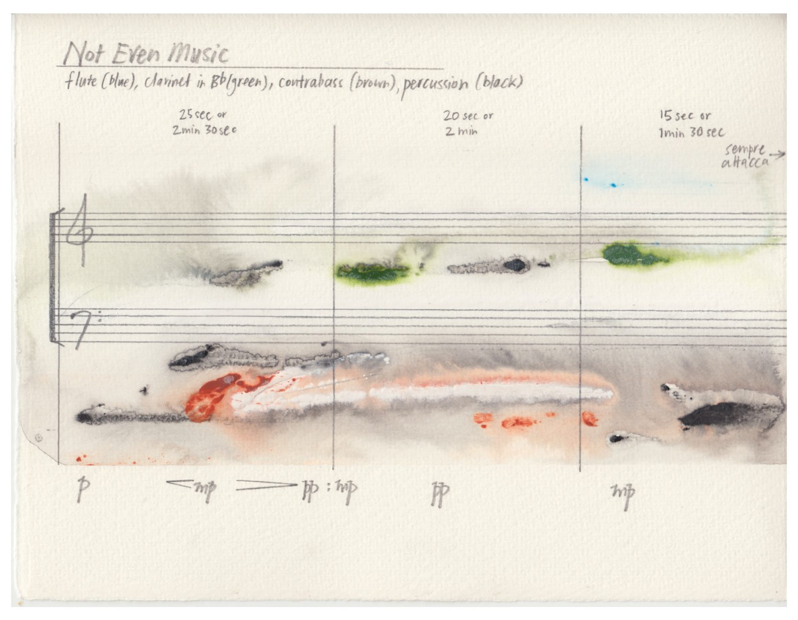
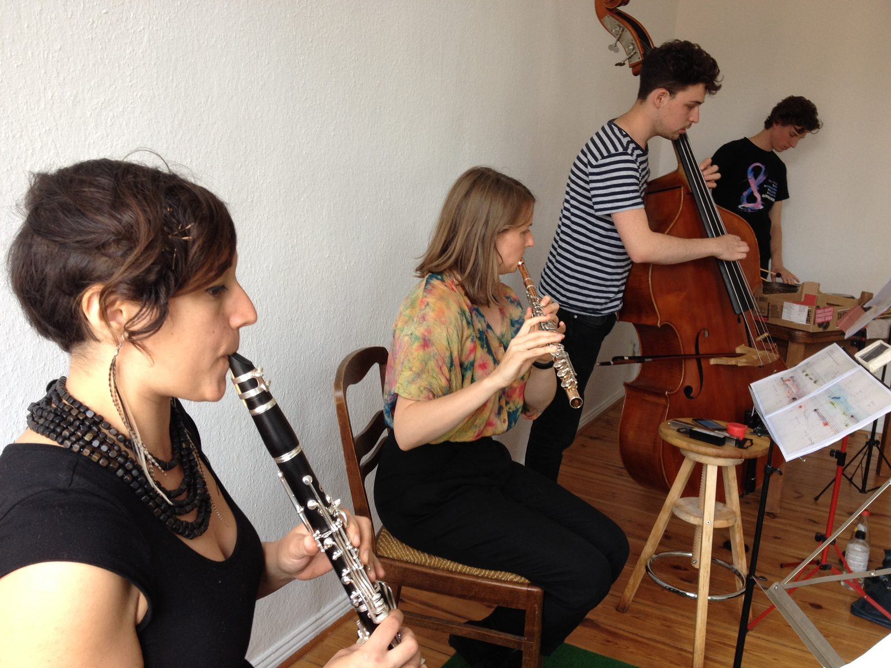
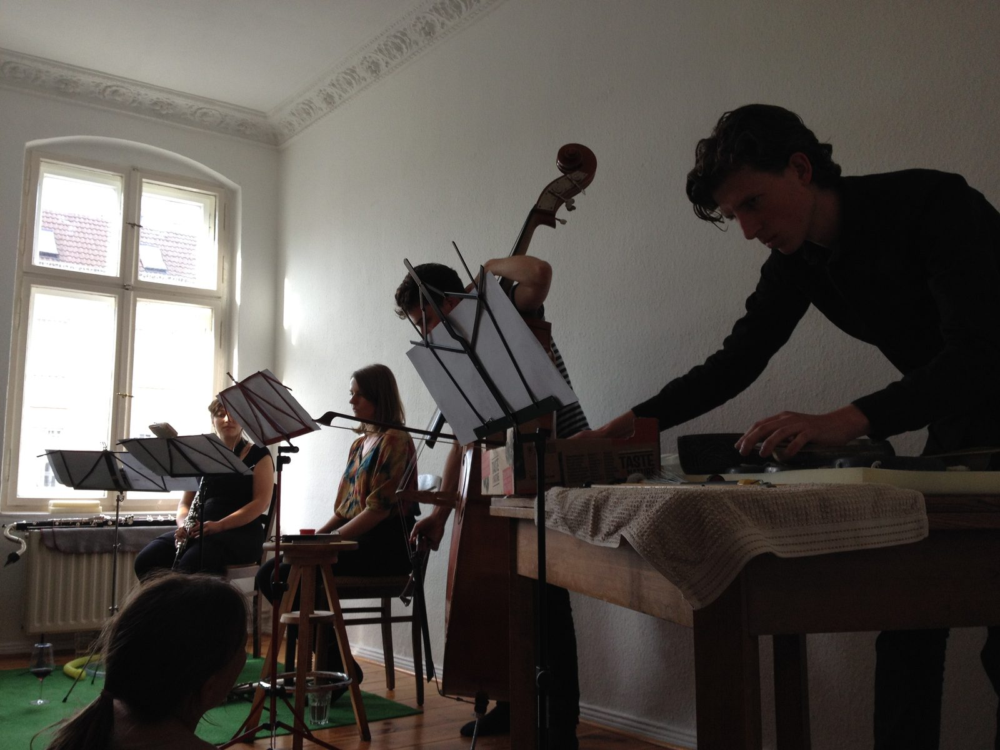
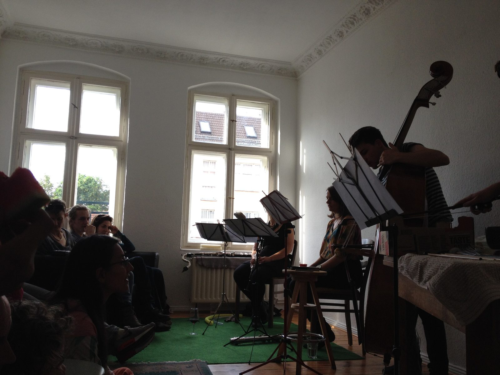
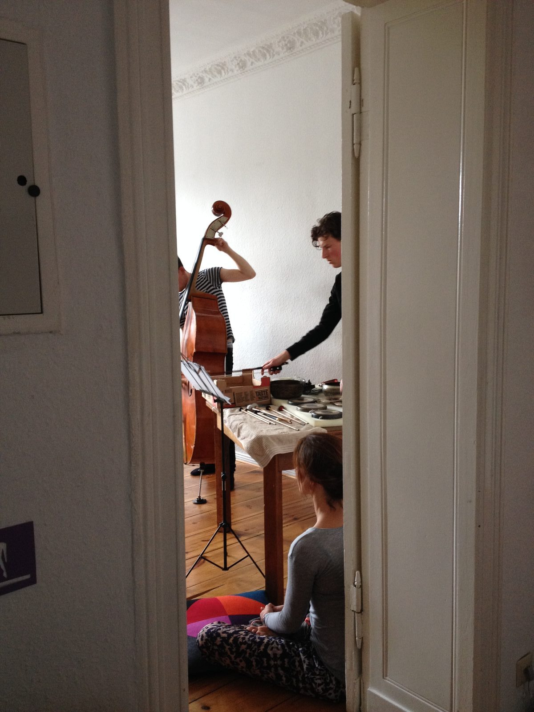

Not Even Music
Not Even Music was written for Quiver Ensemble and performed once, on a Saturday evening in June 2014 — the first and last house concert I held in my Berlin apartment. It is a slow, textural piece. I find myself returning to this recording with the score open, watching it unfold, imagining what each musician was thinking. Some of these people I worked with for years, decades. This was one of the last pieces of music I wrote.

· · ·

Rebecca Lane and Aviva Endean in rehearsal, Weißensee, Berlin, 2014

· · ·
Recording
· · ·
Score
· · ·


NotEvenMusicInWeißensee, Berliner Allee 112, 28 June 2014
· · ·
Invitation
· · ·
Credits
Composer David Young
Ensemble Quiver Ensemble
Flute Rebecca Lane
Clarinet Aviva Endean
Double bass Jon Heilbron
Percussion Matthias Schack-Arnott
Premiere Berliner Allee 112, Weißensee, Berlin, 28 June 2014
Ensemble Quiver Ensemble
Flute Rebecca Lane
Clarinet Aviva Endean
Double bass Jon Heilbron
Percussion Matthias Schack-Arnott
Premiere Berliner Allee 112, Weißensee, Berlin, 28 June 2014